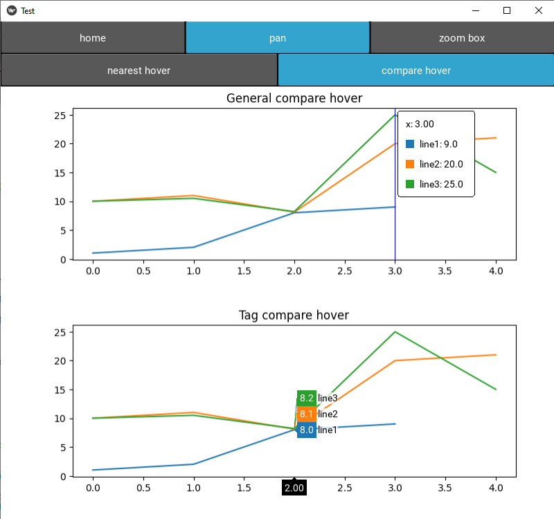

Kivy hover
This example show how to used a kivy hover. This kind of widget can easily be customize for your purpose. See hover widgets in the library and the examples to customize your widgets (link) Because it use kivy to render the cursor, it will not interfer with matplotlib draw or blit method. Nearest and compare hover can be also used in your matplotlib figure just like ploty library.

add_hover function
To activate the hover feature, you need to use the add_hover function. This can be import as follow:
This function require 1 input, the figure instance
other options are also available with this function
- mode (str) : mode behavior (option: 'touch', 'desktop'. Default 'touch')
- hover_type : type of hover (option: 'nearest', 'compare'. Default 'nearest')
- hover_widget : hover widget used (Default nearest: GeneralHover. Default compare: GeneralCompareHover)
available hover widget
kivy_matplotib_widget have several hover include
from kivy_matplotlib_widget.uix.hover_widget import (GeneralHover,
HoverVerticalText,
InfoHover,
GeneralCompareHover,
TagCompareHover,
MatplotlibStyleHover
)
| Hover widget | Description |
|---|---|
GeneralHover |
General hover with vertical line (text is horizontal) |
HoverVerticalText |
hover with vertical text (x and y use 2 rows) |
InfoHover |
hover with extra information |
GeneralCompareHover |
General compare hover (all the values are inside a box) |
TagCompareHover |
Plotly look-a-like compar hover |
MatplotlibStyleHover |
hover like matplotlib cursor (horizontal and vertica line + text outside axis) |
Note
If you want to customized a hover for your purpose, you can create a new hover widget base on the source code and use it into the add_hover function.
Example with nearest and compare hover
based on 'example_compare_hover' example
from kivy.utils import platform
from kivy.config import Config
#avoid conflict between mouse provider and touch (very important with touch device)
#no need for android platform
if platform != 'android':
Config.set('input', 'mouse', 'mouse,disable_on_activity')
else:
#for android, we remove mouse input to not get extra touch
Config.remove_option('input', 'mouse')
from kivy.lang import Builder
from kivy.app import App
from kivy_matplotlib_widget.uix.hover_widget import add_hover,HoverVerticalText,InfoHover,TagCompareHover
from matplotlib.ticker import FormatStrFormatter
#generate 2 figures
import matplotlib.pyplot as plt
fig, ax1 = plt.subplots(1, 1)
ax1.plot([0,1,2,3], [1,2,8,9],label='line1')
ax1.plot([0,1,2,3,4], [10,11,8.1,20,21],label='line2')
ax1.plot([0,1,2,3,4], [10,10.5,8.2,25,15],label='line3')
fig.subplots_adjust(left=0.13,top=0.9,right=0.93,bottom=0.2)
fig2, ax2 = plt.subplots(1, 1)
ax2.plot([0,1,2,3], [1,2,8,9],label='line1')
ax2.plot([0,1,2,3,4], [10,11,8.1,20,21],label='line2')
ax2.plot([0,1,2,3,4], [10,10.5,8.2,25,15],label='line3')
fig2.subplots_adjust(left=0.13,top=0.9,right=0.93,bottom=0.2)
KV = '''
Screen
figure_wgt:figure_wgt
figure_wgt2:figure_wgt2
BoxLayout:
orientation:'vertical'
BoxLayout:
size_hint_y:0.15
Button:
text:"home"
on_release:app.home()
ToggleButton:
group:'touch_mode'
state:'down'
text:"pan"
on_release:
app.set_touch_mode('pan')
self.state='down'
ToggleButton:
group:'touch_mode'
text:"zoom box"
on_release:
app.set_touch_mode('zoombox')
self.state='down'
BoxLayout:
size_hint_y:0.15
ToggleButton:
group:'hover_mode'
text:"nearest hover"
on_release:
app.change_hover_type('nearest')
self.state='down'
ToggleButton:
group:'hover_mode'
text:"compare hover"
state:'down'
on_release:
app.change_hover_type('compare')
self.state='down'
MatplotFigure:
id:figure_wgt
MatplotFigure:
id:figure_wgt2
'''
class Test(App):
def build(self):
self.screen=Builder.load_string(KV)
return self.screen
def on_start(self, *args):
self.screen.figure_wgt.figure = fig
ax=self.screen.figure_wgt.figure.axes[0]
self.screen.figure_wgt.register_lines(list(ax.get_lines()))
ax.set_title('General compare hover')
#set x/y formatter for hover data
self.screen.figure_wgt.cursor_xaxis_formatter = FormatStrFormatter('%.2f')
self.screen.figure_wgt.cursor_yaxis_formatter = FormatStrFormatter('%.1f')
#add compare hover
add_hover(self.screen.figure_wgt,mode='desktop',hover_type='compare')
##figure2
self.screen.figure_wgt2.figure = fig2
ax=self.screen.figure_wgt2.figure.axes[0]
self.screen.figure_wgt2.register_lines(list(ax.get_lines()))
ax.set_title('Tag compare hover')
#set x/y formatter for hover data
self.screen.figure_wgt2.cursor_xaxis_formatter = FormatStrFormatter('%.2f')
self.screen.figure_wgt2.cursor_yaxis_formatter = FormatStrFormatter('%.1f')
#add compare hover
add_hover(self.screen.figure_wgt2,mode='desktop',hover_type='compare',hover_widget=TagCompareHover())
def set_touch_mode(self,mode):
self.screen.figure_wgt.touch_mode=mode
self.screen.figure_wgt2.touch_mode=mode
def home(self):
self.screen.figure_wgt.home()
self.screen.figure_wgt2.home()
def change_hover_type(self,hover_type):
add_hover(self.screen.figure_wgt,mode='desktop',hover_type=hover_type)
add_hover(self.screen.figure_wgt2,mode='desktop',hover_type=hover_type)
Test().run()